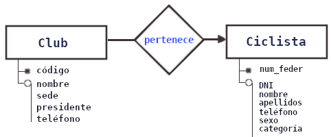

Claves
En el modelo relacional trabajamos con los siguientes tipos de claves:
- Claves candidatas
- Claves primarias
- Claves alternativas
- Claves ajenas (o foráneas)
Vamos a suponer que la UCI guarda los datos de los ciclistas federados en una tabla con los siguientes campos:
Ciclista { num-Federado, DNI, fecha-Nacimiento, fecha-Alta-Federación, nombre,
apellidos, sexo, dirección, email, provincia, club, categoría }
La forma de diferenciar a dos ciclistas de manera inequívoca es mediante algún atributo clave.
Para ello, buscaremos un atributo o un conjunto de atributos que identifiquen de modo único las filas de la tabla. A ese atributo o conjunto de atributos lo llamaremos claves candidatas.
Claves candidatas
👉 Las claves candidatas serán aquel conjunto de atributos que identifiquen de manera única cada fila de la tabla. Es decir, cualquier columna cuyos valores no van a repitir en ninguna otra fila de la tabla, son claves candidatas.
Ciclista { num-Federado, DNI, fecha-Nacimiento, fecha-Alta-Federación, nombre,
apellidos, sexo, dirección, teléfono, email, provincia, club, categoría }
En la tabla de ciclistas, claves candidatas serían el "número de federado, el DNI y quizás también el email y el teléfono podrían ser claves candidatas, aunque podrían no serlo si tenemos ciclistas en categoría infantil, incluso el DNI podría no serlo.
Clave primaria
Al crear la BD tendremos que elegir alguna de las claves candidatas para diferenciar los registros.
👉 La clave primaria de un tabla es aquella clave candidata que se escoge para identificar sus filas de manera única.
En una tabla no pueden existir filas duplicadas, por tanto, SIEMPRE EXISTIRÁ una clave primaria.
En el peor caso, la clave primaria estará formada por todos los atributos de la relación, pero normalmente habrá un pequeño subconjunto de los atributos que haga esta función.
En otros casos, podemos crear un campo único que identifique las filas, por ejemplo un código de usuario, que podrían estar constituidos por valores autonuméricos.
Claves alternativas
👉 Las claves candidatas que no son escogidas como clave primaria son denominadas claves alternativas.
Clave compuesta
👉 Una clave puede estar formada por más de un atributo. En este se dice que es una clave compuesta.
Ejemplo:
Localidades { Cód_Provincial, Cód_local, Localidad }
| Cód_Provincial | Cód_local | Localidad |
|---|---|---|
| 28 | 001 | Madrid |
| 28 | 007 | Madrid |
| 28 | 033 | Madrid |
| 28 | 200 | San Lorenzo de El Escorial |
| 28 | 280 | El Escorial |
| 28 | 440 | Guadarrama |
| 40 | 001 | Segovia |
| 40 | 006 | Segovia |
| ··· | ··· | ··· |
Claves foráneas (ajenas o externas)
En una BD relacional, todas las tablas están relacionadas entre sí. Para establecer una relación deben compartir algún atributo en común que las relacione.
Si un ciclista pertenece a un club, el ciclista debe portar entre sus atributos el nombre (o código) del club al que pertenece:

Club { códigoClub, nombre, sede, presidente, teléfono }
Ciclista { numFeder, DNI, fecNac, fechaFeder, nombre, apellidos, sexo, dirección, teléfono,
email, provincia, club(Club), categoría }
La relación Club --▸ Ciclista es UNO-a-MUCHOS, porque:
- en un club puede haber muchos ciclistas
- un ciclista pertenece a un único club
La flecha apuntará a la entidad que participa con "muchos" en la relación.
La clave foránea viajará en dirección de la flecha.
👉 Una clave ajena es un atributo o conjunto de atributos de una tabla
cuyos valores coinciden con los valores de la clave primaria de alguna
otra tabla (o de la misma).
Vamos a convertir el fichero anterior en una BBDD.
Ejercicio 1: Crea una BDD llamada UCI con las dos tablas anteriores:
Club { códigoClub, nombre, sede, presidente, teléfono }
Ciclista { numFeder, DNI, fecNac, fechaFeder, nombre, sexo, dirección, teléfono,
email, provincia, club(Club), categoría }
Las categorías serán tres: "Amateur", "Profesional", y "Máster" (profesional retirado).
Un ciclista sólo podrá pertenecer a una de las categorías.
Ejercicio 2: Invéntate 2 equipos y 7 nombres de ciclista. Insértalos en las tablas correspondientes.